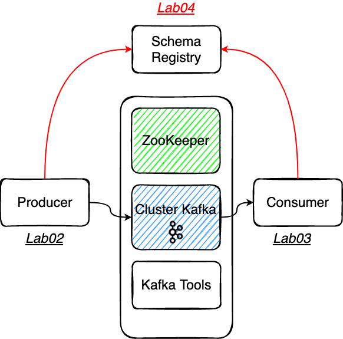
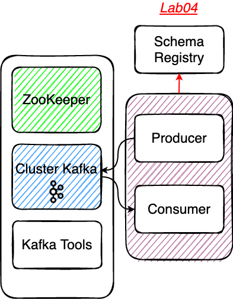
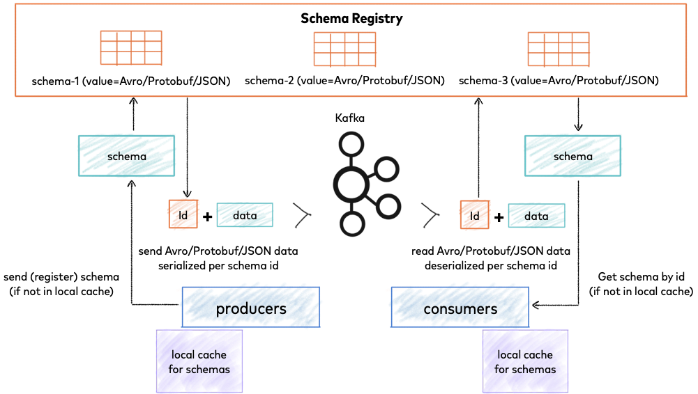

# Lab04 - Schema Registry
# Rappel


# Le Schema Registry de Confluent
Schema Registry est une couche de stockage distribuée pour les schémas qui utilise Kafka comme mécanisme de stockage sous-jacent. 
Schema Registry est sous licence Confluent Community License.
Le repository Github: https://github.com/confluentinc/schema-registry (opens new window) .
La documentation officielle de confluent: https://docs.confluent.io/platform/current/schema-registry/index.html (opens new window) .
# Préparer le projet et le topic Kafka
⚠️ Checkout de la branche
step04⚠️.Se placer dans le repertoire
Lab04-avroDemarrer le conteneur Schema registry.
docker-compose -f docker-compose-schema.yml up -d
# Le topic Kafka
Au sein de ce lab nous utilisons spring-kafka (opens new window) pour dialoguer avec Kafka au sein de l'écosystème Spring Boot.
Spring Kafka fourni des composants qui permettent de vous "faciliter la vie", il permet de facilement créér des topics au sein de votre application: https://docs.spring.io/spring-kafka/reference/html/#configuring-topics (opens new window)
Le bean
NewTopicprovoque la création du topic sur le broker; il n'est pas nécessaire si le topic existe déjà.
@Bean
NewTopic schemaAvroTopic(){
return TopicBuilder.name(topic).partitions(1).replicas(1).build();
}
- ⚠️ Spring Kafka utilise l'API admin du cluster pour réaliser cette opération de création de topic. Même si vous
specifier
KAFKA_AUTO_CREATE_TOPICS_ENABLE: 'false', le paramétrage d'un beanKafkaAdminpermet de manipuler l'API admin.
# Un peu de code
Avro a un modèle de données de type JSON, mais peut être représenté en tant que JSON ou sous une forme binaire compacte. Il est livré avec un langage de description de schéma très sophistiqué qui décrit les données.
- Direct Mapping vers et depuis JSON
- Il dispose d'un format très compact.
- C'est très rapide.
- Vous pouvez générer des objets Java pour des événements Kafka, mais il ne nécessite pas de génération de code afin que les outils puissent être écrits de manière générique pour tout flux de données.
- Il dispose d'un langage de schéma riche et extensible défini en JSON.
- Il dispose de la meilleure notion de compatibilité pour faire évoluer vos données/schémas dans le temps.
Pour plus d'informations sur l'usage d'Avro: https://www.confluent.fr/blog/avro-kafka-data/ (opens new window)
Explorez le découpage projet
consumerproducersrc/main/avro
Au sein de ce projet
Lab04-avronous utilisons un plugin maven nous permettant de générer nos entités métiers d'événements Kafka.
<plugin>
<groupId>org.apache.avro</groupId>
<artifactId>avro-maven-plugin</artifactId>
<version>1.10.2</version>
<executions>
<execution>
<phase>process-sources</phase>
<goals>
<goal>schema</goal>
</goals>
<configuration>
<sourceDirectory>${project.basedir}/src/main/avro/</sourceDirectory>
<outputDirectory>${project.basedir}/target/generated-sources/avro</outputDirectory>
</configuration>
</execution>
</executions>
</plugin>
- Pour générer les entités, il est nécessaire d'éxecuter la phase maven
compilequi appliquera leprocess-sources.
Se placer dans le bon répertoire
Lab04-avro
./mvnw clean compile`
Observez les POJO générés cf.
target/generated-sources/avroMaintenant vous pouvez utiliser directement des objets java dans votre code, pas besoin de passer par un
String, vous pouvez exploiter des objets complexes.
# Partie Producer
La classe VehiclePositionProducer.java
private final ProducerFactory<PositionKey, PositionValue> producerFactory;
- Et surtout paramétrer des clés complexes pour vos
Record:
La classe Subscriber.java
final PositionValue value = getPositionValue(message.getPayload());
final PositionKey key = new PositionKey(topic);
final ProducerRecord<PositionKey, PositionValue> record = new ProducerRecord<>(kafkaTopic,key,value);
producer.send(record);
# Partie Consummer
La classe KafkaRestConsumer.java
Consumer<PositionKey, PositionValue> consumer = kafkaConsumerFactory.createConsumer();
//...
ConsumerRecords<PositionKey, PositionValue> records = consumer.poll(Duration.ofSeconds(5));
# Démarrer votre application en local
-Il s'agit d'un projet Maven qui dispose d'un wrapper mvnw et du plugin spring-boot-maven-plugin, vous pouvez
démarrer votre application spring en local à l'aide de la commande suivante:
Se placer dans le bon répertoire
Lab04-avro
./mvnw spring-boot:run
- Visualiser la consommation des messages sur l'url suivante: http://localhost:8092 (opens new window)
- Que voyez-vous sur l'IHM ?
- Observez les schemas AKHQ http://akhq:8080/ (opens new window) ?
- Ou sont stockés les schémas ?
# Packager votre application avec Docker
- Pour builder et démarrer le conteneur
Se placer dans le bon répertoire
Lab04-avro
docker build -t vp-avro-producer-consumer .
docker run --name vp-avro-producer-consumer --network=tz-kafka-network -p 8092:8092 -d vp-avro-producer-consumer
# Solution
Vous vous doutez que pour disposer des solutions de la step04, il vous suffit de️ checkout la branche step05 😊